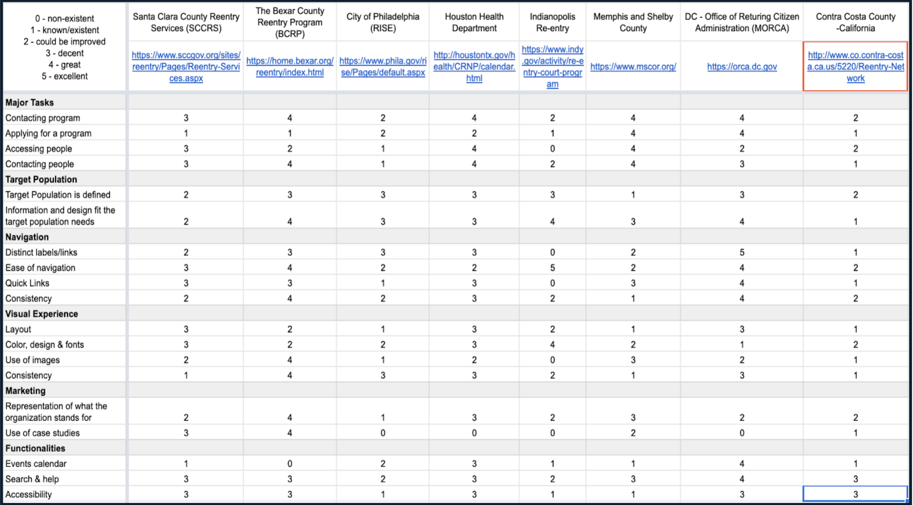
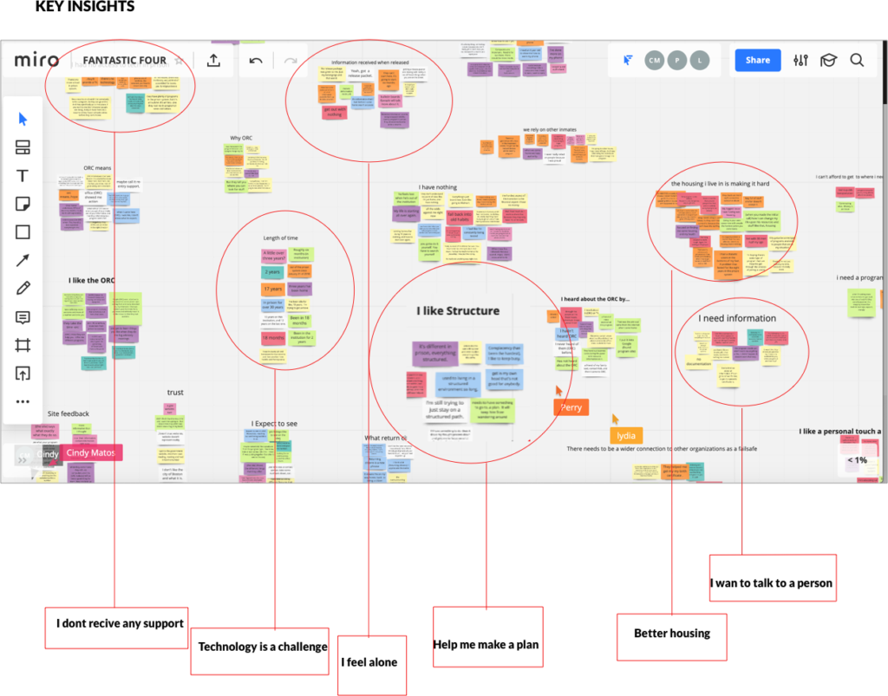
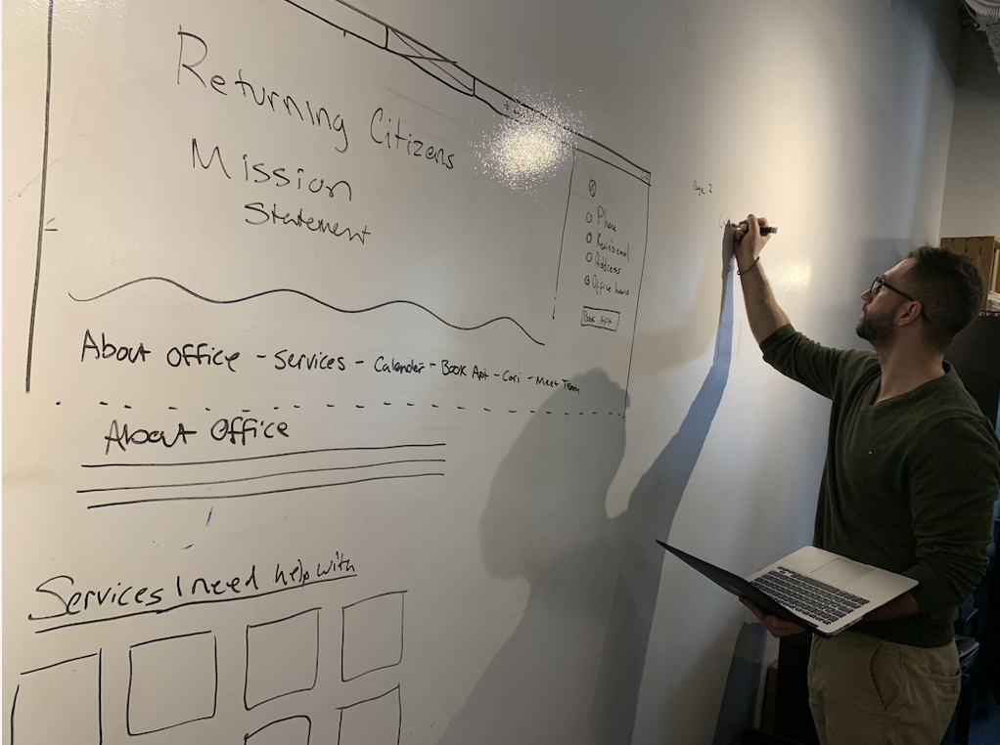
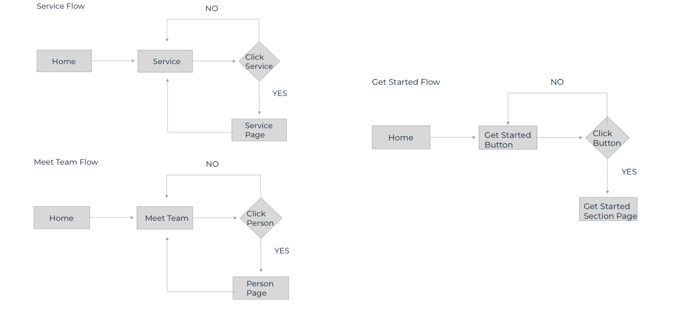
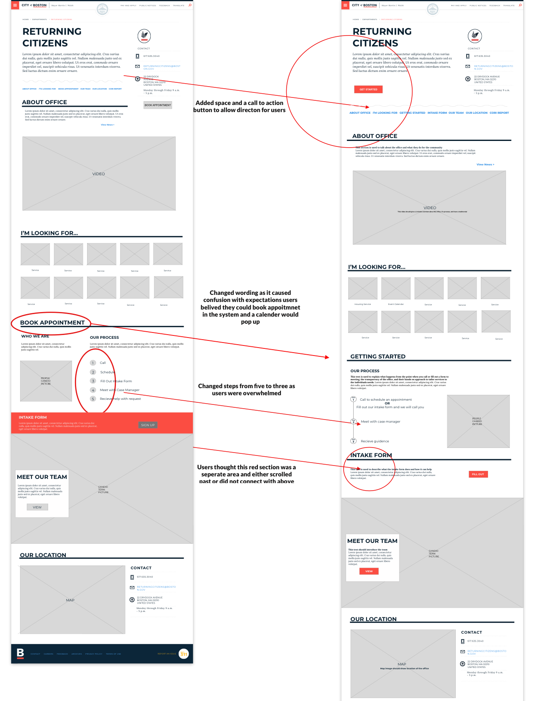
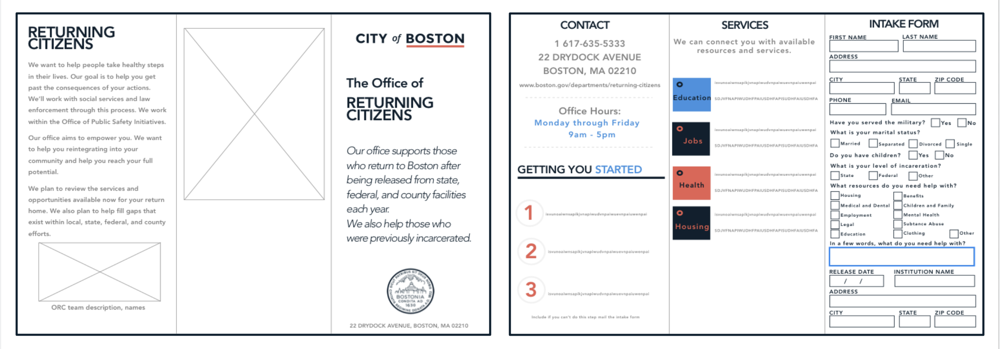

The City of Boston
The bureau of justice system reports that 95% of inmates released from prison will be released back into their communities. The Office of Returning Citizens works to support re-entry of people coming out of incarceration as its reported more than half of these individuals will likely return to jail without the support and proper resources to get their lives back.
Research Process
- 
- 

-
RESEARCH
During the research phase, my team and I conducted 14 user interviews, two contextual inquiries, and staff interviews. Our data was Supported with personas and a comparative analysis of the surrounding municipalities.
-
THE USER’S PERSPECTIVE
After collecting the data and user insights I suggested using a program called Miro to be able to simultaneously work on an affinity map to isolate common pain points and patterns. I found that using this program you can save your user insights easier and collaborate without interference from falling stickies or schedule constraints.
-
A CRY FOR HELP
Following our research, we compiled the interviews and visualized the user insights collected into personas. Our research showed there were two personas, the main persona called Omar who was incarcerated for fifteen years and had little technology knowledge. Our secondary persona, Grace was incarcerated for a much shorter period and understood technology a bit better.
Design Process
- 
- 
- 
-
After reviewing the research, finding our user’s pain points, and drafting persona’s, it was time to begin the initial design process. I and the team began sketching our ideas for solving our user’s problem. We bounced ideas back and forth constantly to further push innovation and balance. We wanted a system that fully shines for the user.
-
We created a site map and user flows from research and sketches. These step-by-step guide for the user shows each step in their user experience journey.
-
Developing a wireframe prototype was the first step in the process to really allow us to gain a visual of what the content and layout would look like allowing better user feedback from usability testing.
Delivery Process
- 

-
Our team came up with two recommendations one was a redesign of the page and the other was to create a pamphlet for inmates to be sent out before they were released. The paper pamphlet was based on the lack of information to prep inmates for release and the lack of technology access and awareness.Ultimately, due to the timeline, we presented the two recommendations to the client and it was decided our time would be spent focusing on the redesign of their website.